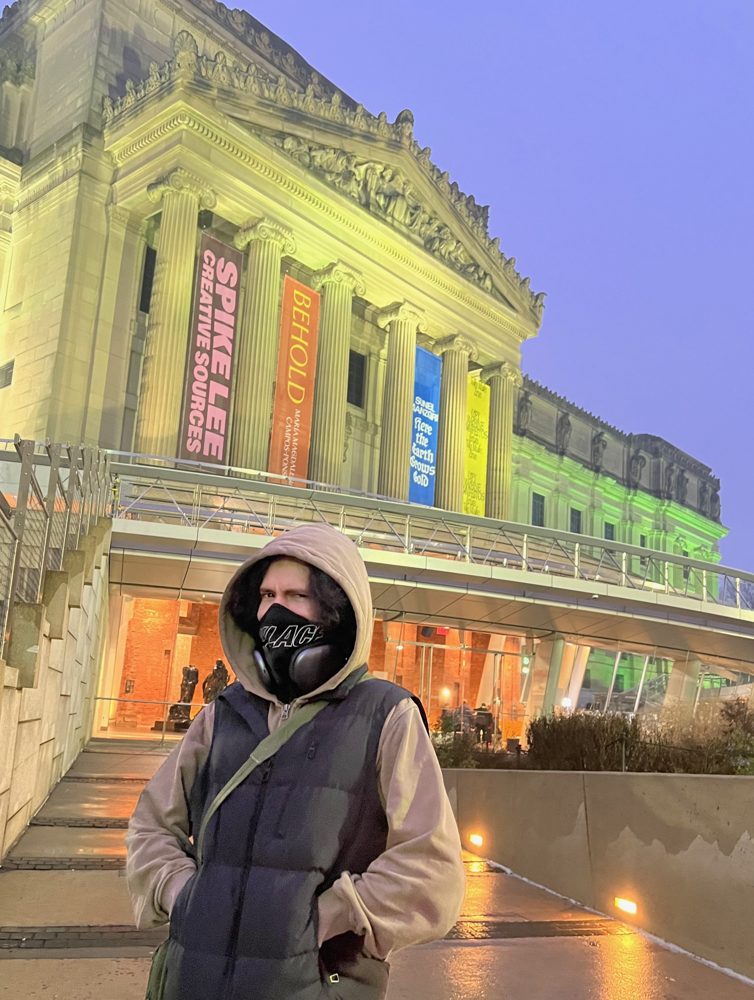

My name is Christian Agosto, and I am a Studio Art major at Hunter College. My primary concentration is Drawing, however I've found myself leaning more towards Photography as an artform. I have found interest in documenting the world in real time, and appreciating my surroundings. I find that the class is interesting because I have the chance to create a website and really experiment with showcasing my art.